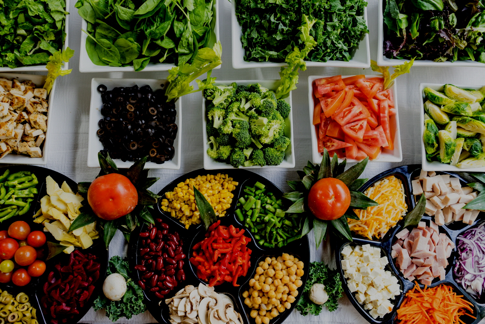

{% extends 'base.html' %}

{% block script %}
  <script src="https://code.jquery.com/jquery-1.12.4.js"></script>
  <script src="https://code.jquery.com/ui/1.12.1/jquery-ui.js"></script>
{% endblock %}

{% block nav_style %}
<nav class="navbar fixed-top navbar-expand-lg navbar-dark scrolling-navbar">
{% endblock%}

{% block nav_home %}
active
{% endblock %}

{% block container %}
  <!--Carousel Wrapper-->
  <div id="carousel-slide" class="carousel slide carousel-fade" data-ride="carousel">

    <!--Indicators-->
    <ol class="carousel-indicators">
      <li data-target="#carousel-slide" data-slide-to="0" class="active"></li>
    </ol>
    <!--/.Indicators-->

    <!--Slides-->
    <div class="carousel-inner" role="listbox">

      <!--First slide-->
      <div class="carousel-item active">
        <div class="view">

          <!--Image source-->
          

          <!-- Mask & flexbox options-->
          <div class="mask rgba-black-light d-flex justify-content-center align-items-center">

            <!-- Content -->
            <div class="text-center white-text mx-5 wow fadeIn">
              <h1 class="mb-4">
                <strong>137,076개의 실데이터 기반</strong>
              </h1>

              <p>
                <strong>메뉴에 따른 머신러닝 기반 잔반량 예측 프로그램</strong>
              </p>

              <p class="mb-4 d-none d-md-block">
                <strong>하루 급식으로 버려지는 음식물 쓰레기 4톤,  잔반량 예측으로 효율적인 급식비 활용과 환경 보호 두 마리 토끼를 잡으세요</strong>
              </p>

              <a href="/predict" class="btn btn-outline-white btn-lg">
                잔반 예측 시작하기
                <i class="fa fa-graduation-cap ml-2"></i>
              </a>
            </div>
            <!-- Content -->

          </div>
          <!-- Mask & flexbox options-->

        </div>
      </div>
      <!--/First slide-->

    </div>
    <!--/.Slides-->

    <!--Controls-->
    <a class="carousel-control-prev" href="#carousel-slide" role="button" data-slide="prev">
      <span class="carousel-control-prev-icon" aria-hidden="true"></span>
      <span class="sr-only">Previous</span>
    </a>
    <a class="carousel-control-next" href="#carousel-slide" role="button" data-slide="next">
      <span class="carousel-control-next-icon" aria-hidden="true"></span>
      <span class="sr-only">Next</span>
    </a>
    <!--/.Controls-->

  </div>
  <!--/.Carousel Wrapper-->
{% endblock %}